Analise de imagens de satelite da zona de impacto do rompimento da barragem de janeiro de 2019 -- deteccao de edificacoes, classificacao geoespacial e saidas anotadas para as 6 cenas.
Em 25 de janeiro de 2019, a barragem de rejeitos da mina de ferro Corrego do Feijao, operada pela Vale S.A., rompeu nas proximidades de Brumadinho, Minas Gerais. A lama percorreu aproximadamente 12 km pelo vale do Rio Paraopeba, matando 270 pessoas e destruindo infraestrutura e habitacoes em seu caminho.
O desafio fornece 6 PNGs pre-desastre cobrindo o corredor de impacto. Nenhuma das imagens possui georreferenciamento embutido (sem metadados GeoTIFF, sem CRS). Um arquivo KML define o limite historico da lama como um poligono -- e a unica referencia espacial disponivel. A tarefa: detectar edificacoes em cada imagem e classifica-las como dentro ou fora da zona de impacto.
Sem mascaras de ground truth. Sem georreferenciamento embutido. Recortes brutos de satelite em diferentes niveis de zoom cobrindo o vale do Paraopeba.
As imagens precisam ser alinhadas espacialmente ao poligono KML usando apenas pistas visuais -- pixels vermelhos de borda casados com coordenadas KML via estimativa afim.
Supervisao fraca via Microsoft Building Footprints (ML do Bing Maps, cobertura global) utilizada como ground truth aproximado. Rotulos formais sao indisponiveis.
Estudo pos-desastre da exposicao pre-desastre -- identificando quais estruturas estavam dentro do limite do eventual alagamento antes do rompimento.
Copia PNGs + KML, valida arquivos via MD5, registra metadados
Segmentacao de instancias com YOLOv8 treinado em dados de edificacoes -- retorna poligonos de mascara por edificacao detectada
Detecta pixels vermelhos, fecha o poligono por flood fill raster, classifica cada edificacao YOLO como dentro/fora
Tinta semitransparente na zona, contorno verde/vermelho por edificacao, PNG anotado salvo em data/gold/annotated/
O dataset global de footprints da Microsoft (Bing ML, release 2020-2021) fornece poligonos de edificacoes para a regiao. Filtramos para a bbox do KML e mantemos apenas poligonos com confianca >= 0,90.
Os pixels vermelhos de borda da zona de impacto sao detectados por limiarizacao HSV e depois casados com os cantos do poligono KML via ajuste afim. Isso produz uma transformacao por imagem sem necessidade de medicoes GCP em campo.
Os numeros reportados sao quantos poligonos do catalogo MS Building Footprints (filtrados por confianca >= 0,90 e dentro da bbox do KML) caem dentro do poligono vermelho de impacto em cada imagem. Nao executamos um detector visual no momento da inferencia.
A linha vermelha presente nas imagens e processada para gerar uma mascara preenchida da zona de impacto. Cada edificacao detectada e classificada como "na zona de impacto" se sua mascara sobrepor a mascara da zona, e como segura caso contrario.
Fine-tuning do YOLOv26n-seg pre-treinado no COCO com 6 imagens de satelite de Brumadinho (4 treino, 2 validacao). Augmentation por espelhamento nos eixos X, Y e XY expandiu o conjunto de treino para 24 imagens, com ganho de desempenho. O modelo exportado (geo_builds.pt) retorna mascaras de poligono por edificacao detectada.
Todos os itens do rubric estao presentes. Os comandos abaixo executam a partir do diretorio brum/.
| Entregavel | Como verificar | |
|---|---|---|
| ✓ | Repositorio publico no GitHub | github.com/pedrogasparotti/kartado-challenge |
| ✓ | Codigo modular em src/ |
src/data/ | src/inference/ | src/viz/ |
| ✓ | Pipeline medalhao Bronze -> Silver -> Gold | python scripts/run_pipeline.py (ingestao -> inferencia YOLO -> mascara de zona + anotacao) |
| ✓ | Ponto de entrada de inferencia com flags CLI | python scripts/pipeline_IA.py --images data/bronze/img0.png |
| ✓ | Testes unitarios | pytest tests/ -- testes de georeferenciamento e classificacao de edificacoes |
| ✓ | Imagens de saida anotadas (todas as 6) | data/gold/annotated/img{0..5}_annotated.png -- ver galeria abaixo |
| ✓ | Contagem de edificacoes por imagem | Total / dentro da zona de impacto / fora -- impresso por run_pipeline.py |
Cada par mostra o recorte original de satelite (esquerda) ao lado da saida anotada (direita).
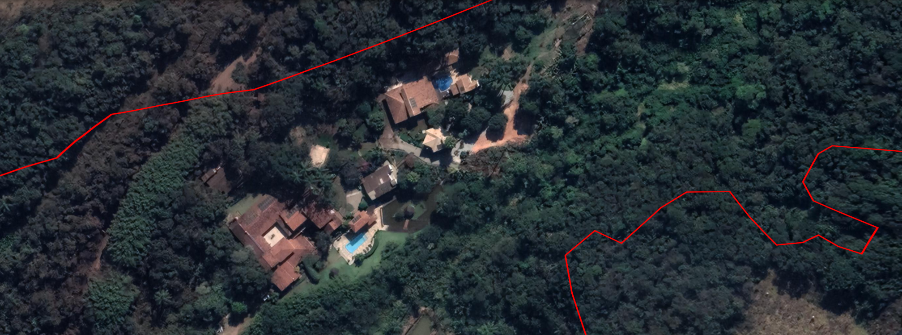
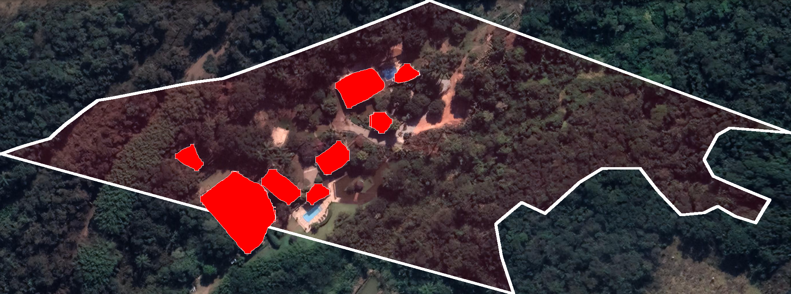
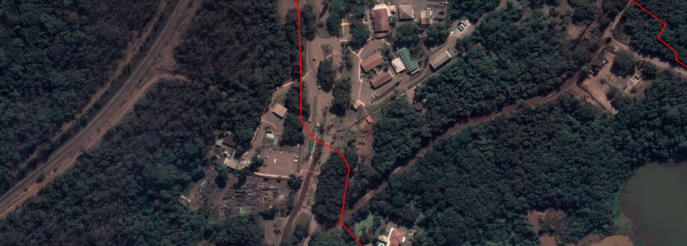
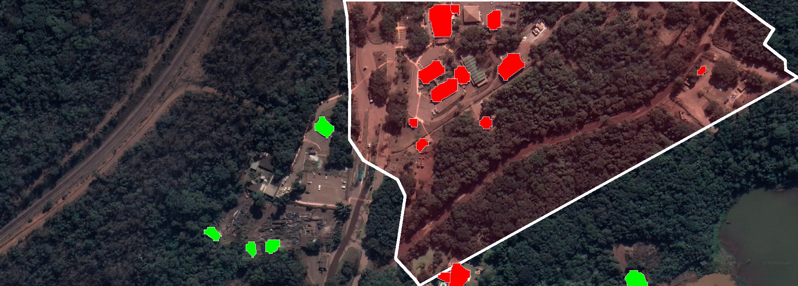
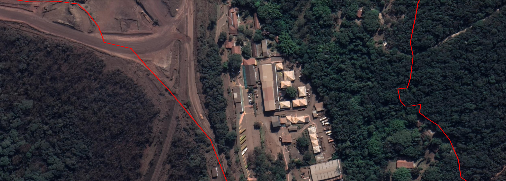
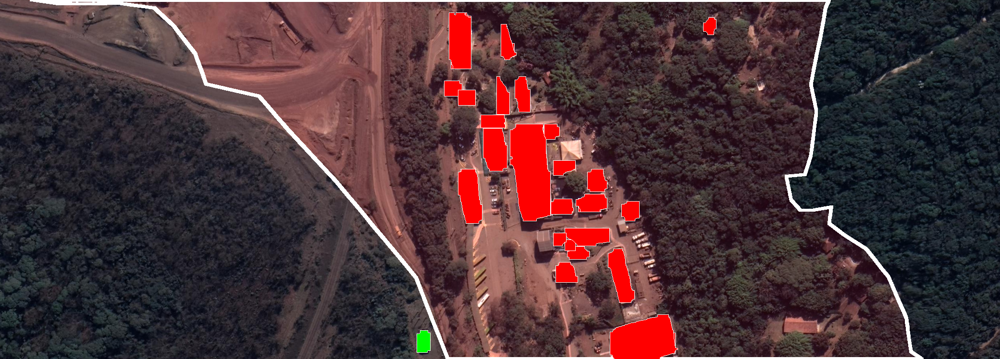
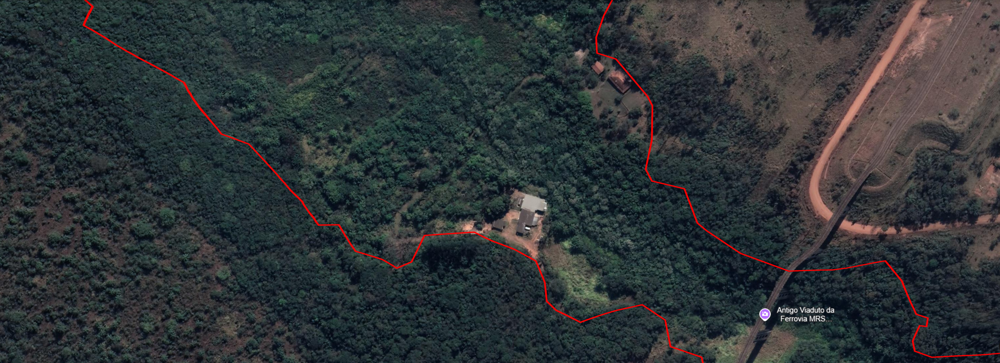
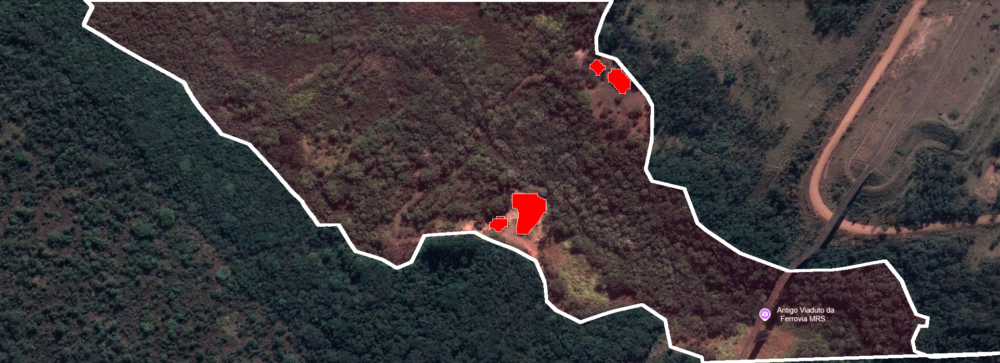
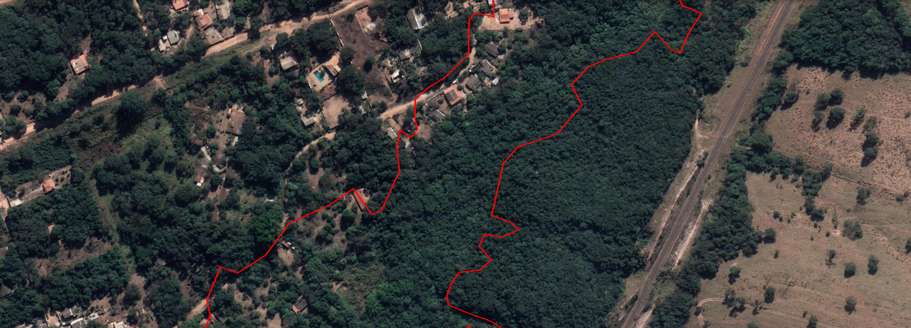
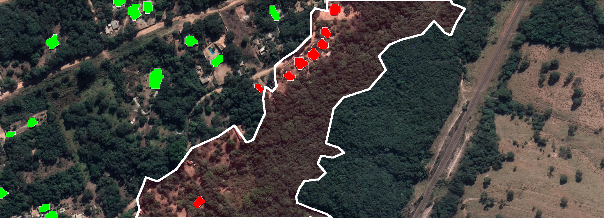
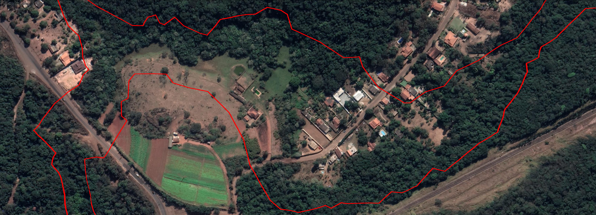
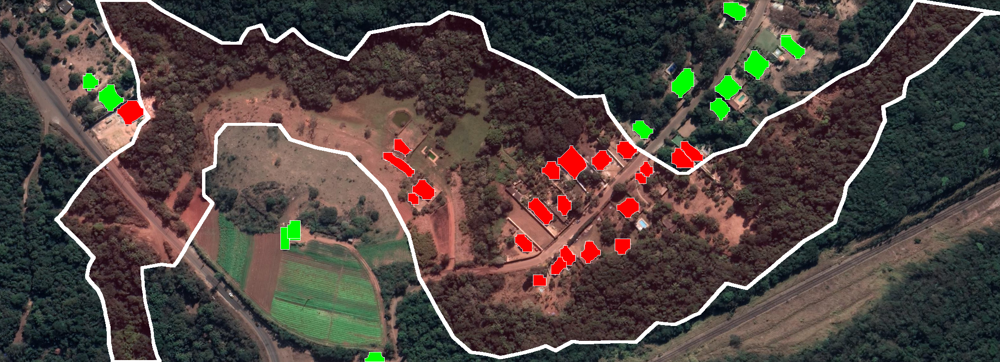
Todos os comandos executam a partir do diretorio brum/ dentro do repositorio clonado.
As saidas anotadas de todas as 6 imagens ja estao presentes em
data/gold/annotated/ a partir do ultimo run do pipeline.